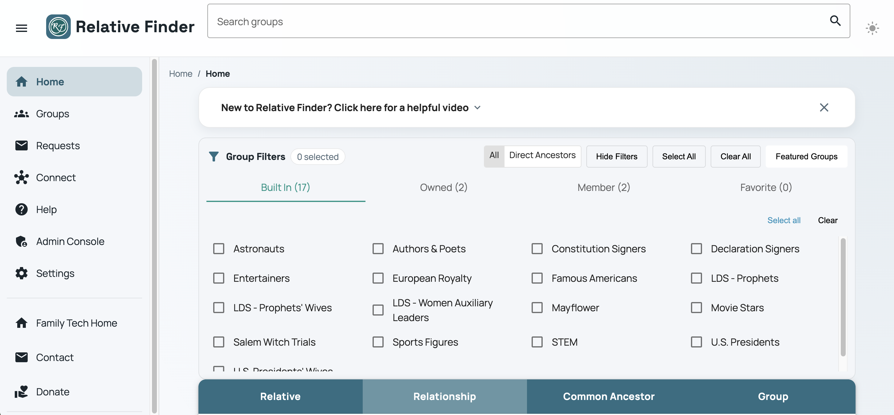
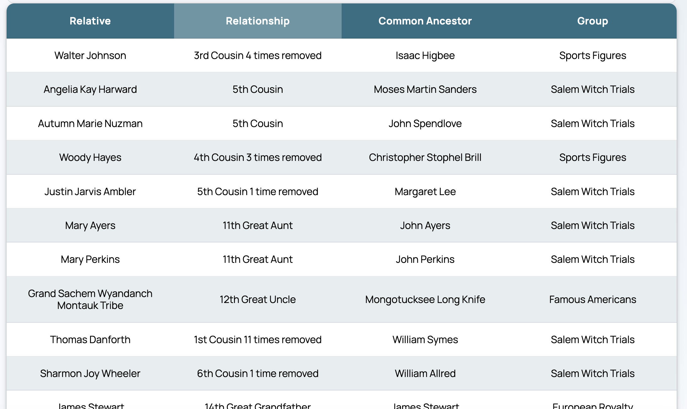
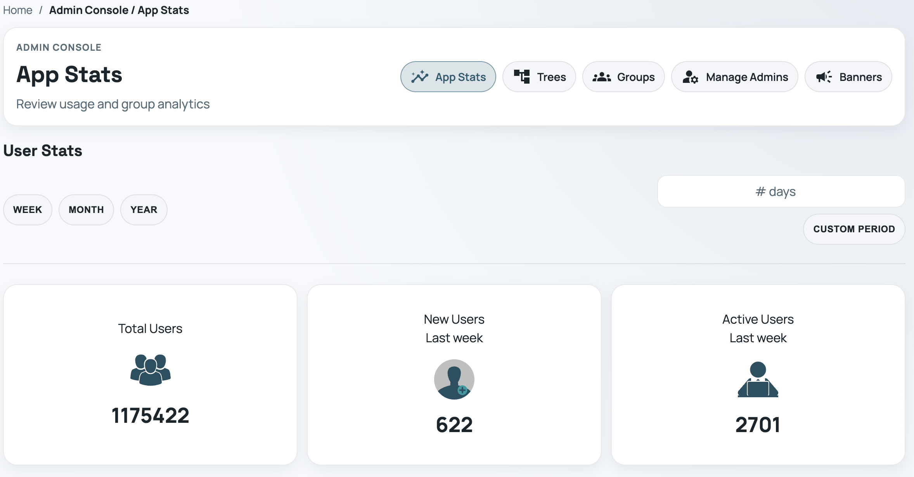
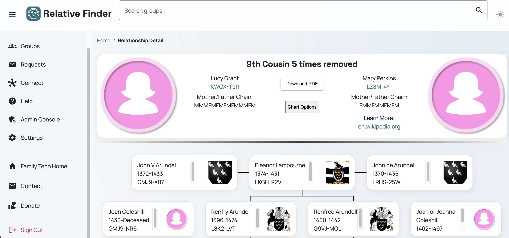
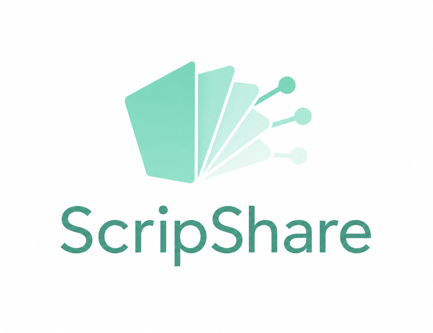
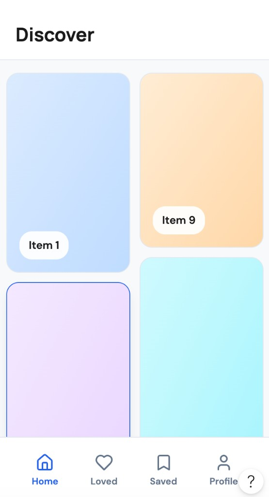
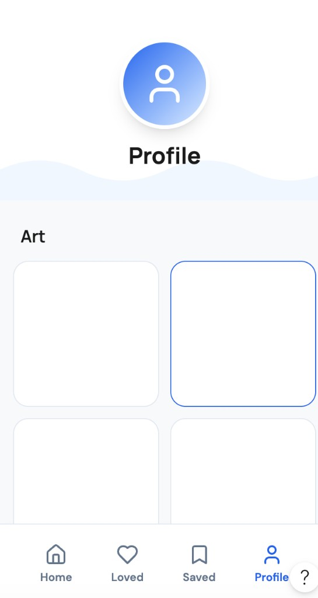
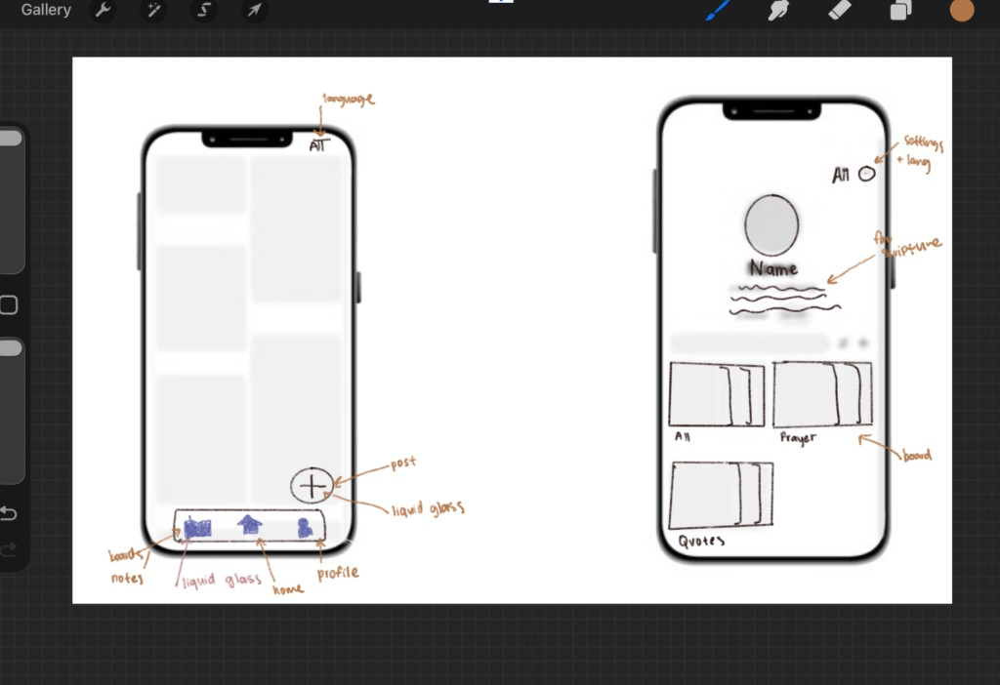
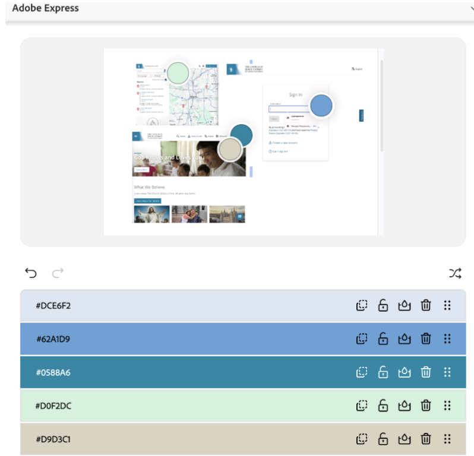

Relative Finder
BYU Family History Technology Lab
A web application that helps users find and connect with their relatives.
Relative Finder Site HCI Case StudyI'm a Computer Science student at Brigham Young University with a passion for building software that looks beautiful, solves real problems, and is easy to use. Alongside my coursework, I work as a software engineering research assistant in BYU's Family History Technology Lab, where I help develop applications used in collaboration with FamilySearch. I'm especially interested in front-end development, software engineering, web design, and creating intuitive user experiences.
Outside of coding, I enjoy skiing, tennis, hiking, and spending time with my family and friends.
Gallery view




BYU Family History Technology Lab
A web application that helps users find and connect with their relatives.
Relative Finder Site HCI Case Study




Last updated: June 2026
An app that helps users study their scriptures in a quick and easy way.
View case studyOpen to internships, research collaborations, and HCI-focused roles.